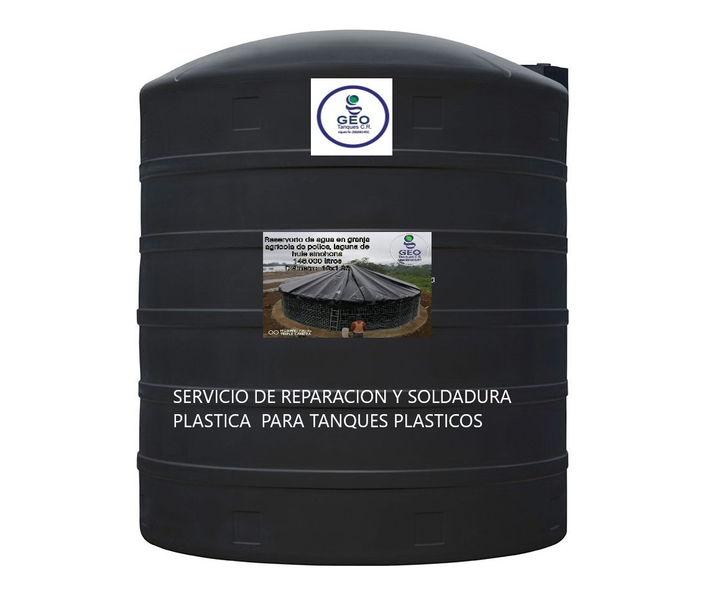
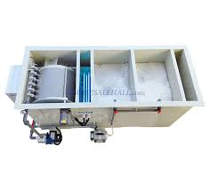
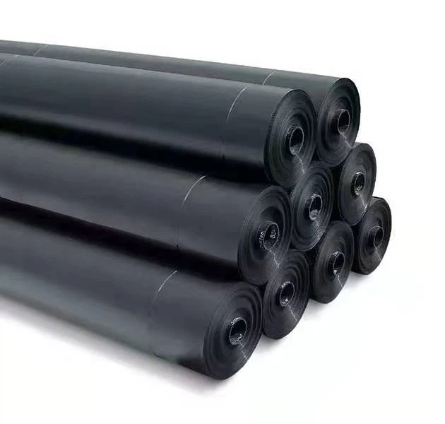

Tanques P/ Agua Reparación de Rajaduras
Precio:₡250.000
Granja de peces y Sistemas de fitros automáticos y sedimetadores

Geomembrana de 500, 750, 900 Micras P/ Reservorios salidas de parche de 2 Y 3 PG
Precio: ₡11.500
Para la Granja de peces tenemos estos productos
Precio: ₡26.000